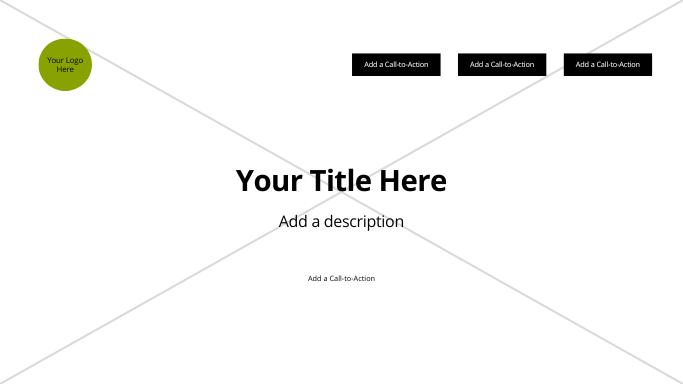
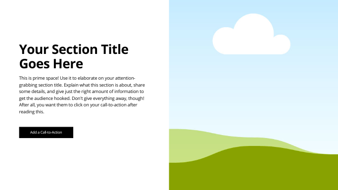
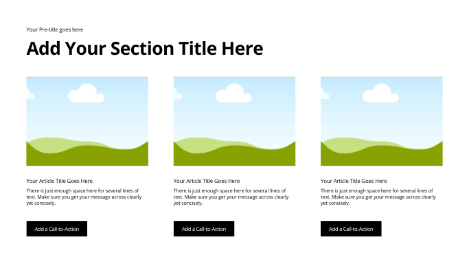
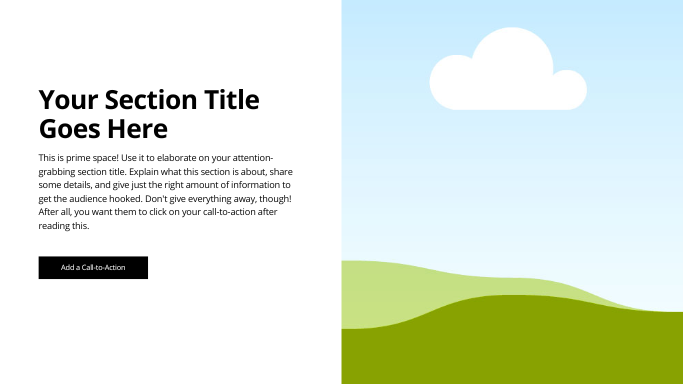
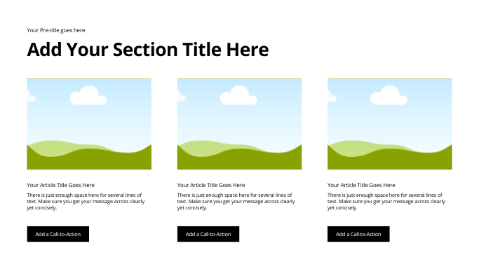
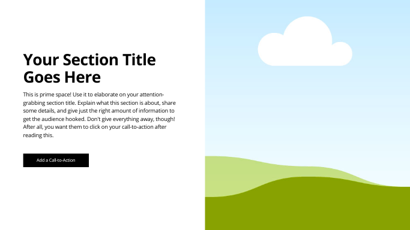
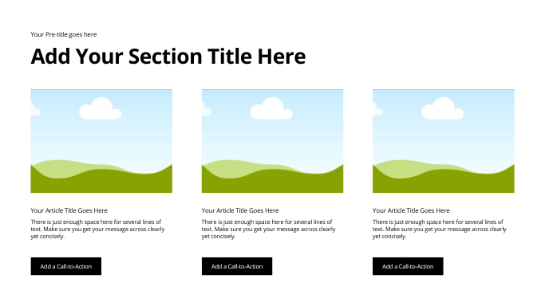

Wireframe:
 




This question will help drive content related to popular landmarks, cultural spots, and must-see attractions in Peru, including Machu Picchu, Cusco, Lima, and more, with descriptions, images, and recommendations based on visitor preferences.
This scenario will guide content about Peru's incredible natural landscapes, including the Andes Mountains, Amazon Rainforest, Lake Titicaca, and Colca Canyon, catering to adventure seekers and nature enthusiasts.
The color schema for this site includes two main colors:
/* CSS HSL */
--black: hsla(0, 0%, 0%, 1);
--deep-purple: hsla(270, 30%, 20%, 1);
--andean-sunrise: hsla(45, 100%, 45%, 1);
--peru-orange: hsla(30, 80%, 55%, 1);
--andes-blue: hsla(200, 60%, 50%, 1);
--inca-white: hsla(30, 20%, 95%, 1);
--white: hsla(0, 0%, 100%, 1);

